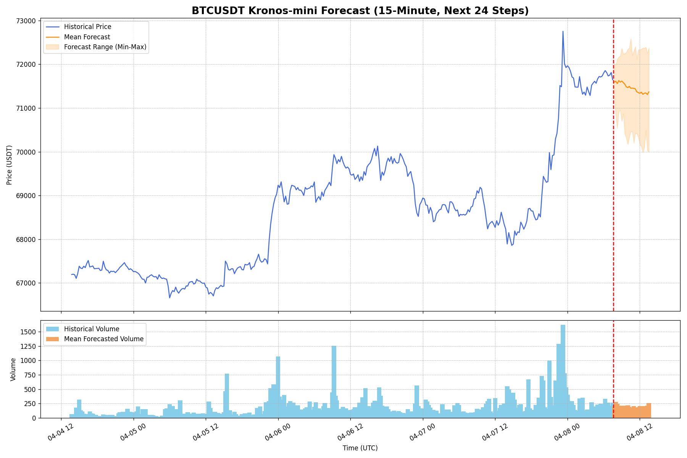

Kronos-mini
The compact model forecast using the `Kronos-Tokenizer-2k` tokenizer on BTC/USDT 15m candles.
Upside Probability
40.0%
Probability that the final 15m-horizon forecast point is above the latest close.
Volatility Amplification
93.3%
Probability that forecast volatility exceeds recent 15m historical volatility.
Mean Price at Horizon
71,370.50
Mean predicted BTC/USDT close price at the end of the 15m forecast horizon.
24-Step Probabilistic Forecast
The chart shows historical price and volume with the model's forecast range and mean path.
